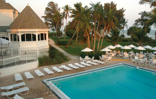

| other links
|
 |
|
Sanibel Symposium Sponsors
Alliance for Epilepsy Research
NIH/ORDR

Sanibel Symposium
location and accommodations
Casa Ybel Resort, Sanibel Island, Florida USA
Epilepsy Organizations
 |
Epilepsy Toronto -
Not-for-profit, registered charity dedicated to the
promotion of independence and optimal quality of life for
all people with epilepsy and their families. Offers a
complete range of epilepsy support services, information
programs, and education to the pu
http://www.epilepsytoronto.org/
|
| International League
Against Epilepsy (ILAE) - The world’s preeminent
association of physicians and other health professionals
working towards a world where no persons' life is limited by
Epilepsy. Its mission is to provide the highest quality of
care and well-being for those afflicted with the condition
and other related seizure disorders.
http://www.ilae.org
|
|
Kuekids Australia - Kuekids
Australia provides information, links & support to parents,
caregivers, families and friends of children who have
uncontrolled epilepsy, who may be using the ketogenic diet
or who have to deal with food intolerances or allergies.
http://home.iprimus.com.au/kuekids/home/
|
|
NYU Comprehensive Epilepsy Center
- The largest epilepsy program in the
Eastern United States, offering testing, evaluation,
screening, treatment, drug trials, alternative therapies and
surgical intervention for children, adolescents, and adults
with all forms of epilepsy.
http://www.nyuepilepsy.org
|
|
The Epilepsy Institute - A
non-profit social service organization, is dedicated to
improving the quality of life of people with epilepsy and
their families. Our program services are available to
residents of New York City and Westchester County.
http://www.epilepsyinstitute.org
|

Copyright 2009 - Sanibel Symposium - All Rights
Reserved
|
|